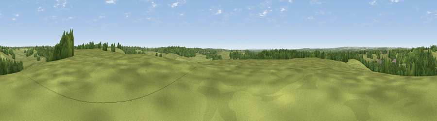

Viewpoint near Frogham
#30698 in England · top 37% of its area beats it · near FroghamThe view, rendered

A 360° render of this exact spot computed from the terrain model, tree cover and land cover — summer colours, afternoon light, calibrated against photographs of famous viewpoints. Real trees, hedges and buildings will differ in detail.
The panorama
Grey silhouette: terrain skyline in each direction (720 bearings, Earth curvature and refraction included). Dashed green: skyline with trees (+15 m) and buildings (+8 m) as obstacles. Blue strip: how far the ground is visible on each bearing.
Where the view opens
Wedge length = distance to the farthest visible ground on that bearing (vegetation-aware). Rings at 10, 25 and 50 km.
What fills the view
63% grassland · 32% woodland · 3% cropland ·
Angular shares of the visible panorama (visual magnitude), not map area. Landscape diversity 0.36 (0–1 Shannon).
Key numbers
More beautiful places nearby
The staircase of upgrades: each row has a higher view potential than everything closer. Driving times are estimates from straight-line distance, calibrated against real road routing — check an actual route before setting out.
| Place | Direction | Drive | Score |
|---|---|---|---|
| Viewpoint near Breamore | NNW · 7 km | ~15 min | 43.0 |
| Viewpoint near Whitsbury | NNW · 7 km | ~15 min | 45.3 |
| Viewpoint near Bramshaw | ENE · 8 km | ~17 min | 46.6 |
| Damerham Knoll | WNW · 10 km | ~19 min | 53.5 |
| Viewpoint near West Grimstead | NNE · 11 km | ~21 min | 62.7 |
| Viewpoint near Martin | WNW · 14 km | ~26 min | 64.6 |
| Viewpoint near Cranborne | WNW · 15 km | ~27 min | 65.0 |
| Trow Down | WNW · 23 km | ~37 min | 67.5 |
50.92090, -1.74067 · source: screening · position refined by local search. Computed location — check access rights before visiting.